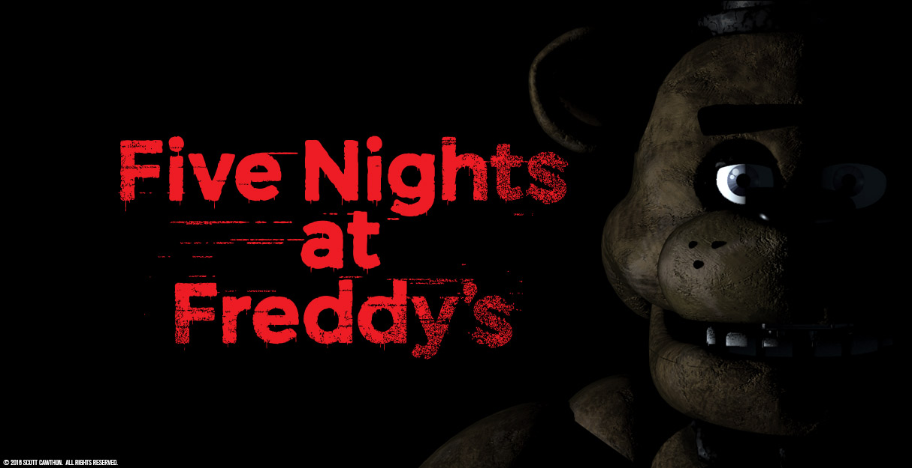

Five Nights at Freddy's (often abbreviated to FNaF) is a media franchise based around an indie video game series created,
designed, developed, and published by Scott Cawthon for Microsoft Windows, iOS, and Android.
The series is centered on the story of a fictional restaurant named Freddy Fazbear's Pizza, a pastiche of restaurants such as Chuck E.
Cheese's and ShowBiz Pizza Place. The first three games involve the player working as a nighttime security guard: they must utilize several tools,
most notably checking security cameras, to survive against animatronic characters, which become mobile and homicidal after hours.
The fourth game, which uses different gameplay mechanics from its predecessors, takes place in the house of
a child who must defend against nightmarish versions of the animatronics by closing doors and fleeing on foot.
The fifth game takes place in a maintenance facility owned by a sister company of Freddy Fazbear's Pizza.
The player character is a technician instead of a night guard, who must do different tasks each night as told by an AI voice heard in the game.
In the sixth game, the player acts as the owner of a pizzeria which they must decorate with payable items, and must also work the night shift for their pizzeria,
which plays similarly to previous games.
The series has gained widespread popularity since its release.
Three novel adaptations, Five Nights at Freddy's: The Silver Eyes, Five Nights at Freddy's: The Twisted Ones, and Five Nights at Freddy's: The Fourth Closet,
were released in 2015, 2017, and 2018, respectively.
A guidebook for the series, Five Nights at Freddy's: The Freddy Files, was released on August 29, 2017,
with an activity book titled Five Nights at Freddy's: Survival Logbook being released on December 26, 2017.
A film adaptation is currently in the works.
A horror attraction based on the series was featured in the Adventuredome in Halloween of 2016.
Additionally, the series appeared in the Guinness Book of Records: Gamer's Edition,
breaking the record for the largest number of sequels released in a year.